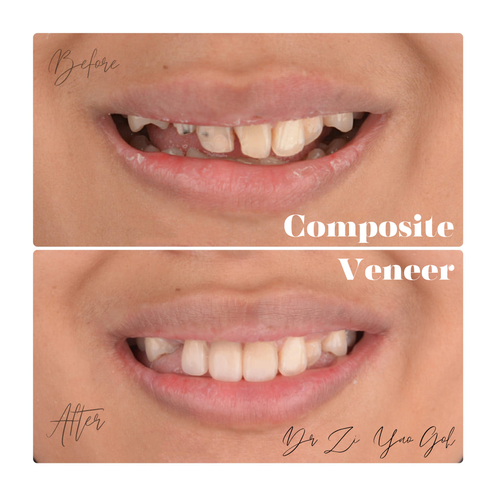

Teeth Whitening
For those worried about the state of their teeth, we have a number of treatments
to help boost your confidence.
 Teeth Whitening
Teeth Whitening
What are teeth restoration and teeth whitening treatments and what to expect?
These are both treatments used to help beautify the color and improve the appearance of teeth, helping to achieve a brighter, whiter smile. Although these two treatments have similar goals, they use different approaches to meet the needs of different patients.
-
01
While tooth restoration is used to restore the damaged part of the tooth, teeth whitening only aims to brighten and whiten the color of the tooth.
This is done by applying a certain whitening gel to the teeth, and then shining UV light on them. This creates a reaction that causes the tooth color to appear whiter. This procedure is completely safe when performed by a professional.
 -
02
This treatment usually involves taking a tooth mold from the patient, which is then used to make a tray that fits the tooth.
The whitening gel is placed on this tray, and the patient can take it home to perform teeth whitening at home.
-
03
Patients also have the option of undergoing laser whitening, which is a form of whitening that can only be performed by a dentist.
In this procedure, a whitening product is placed on the teeth, which is activated using a laser to speed up the teeth whitening process.
FAQ
Frequently Asked Questions
For 48 hours, avoid dark colored foods and drinks, as these can stain the newly whitened teeth. Also avoid highly acidic foods, such as fermented fruits, citrus fruits, and vinegar.
For a few days after recovery, avoid eating very hard or sticky foods, such as nuts, hard candy, and raw vegetables such as carrots. Make sure your oral hygiene is well taken care of, by brushing and flossing regularly.
Both of these treatments can be done, but it is recommended to perform whitening first before recovery. This is because whitening only affects natural teeth, not dentures. Therefore, whitening is done first to achieve the target color that will be the basis for the dentures.
Teeth whitening is generally safe if done correctly. However, some people may experience temporary tooth sensitivity after the procedure, which usually goes away quickly.
There are 2 home teeth whitening treatments that are often chosen. Patients can use a home kit, which allows them to perform the entire teeth whitening process from the comfort of their own home. However, there is a risk that this kit does not go through rigorous safety testing, and may be too acidic. There is also the risk that the tray provided may not fit, causing potential damage to the gums and other parts of the mouth.
Patients can also choose to use whitening toothpaste. Although this toothpaste is not strong enough to actually whiten teeth, it is effective in dealing with stains and/or discoloration
This depends on the type of tooth restoration and how well you take care of them. Fillings can last 7-10 years.